Azure 1
Azure 2
API Security Practices
Best practices for securing APIs in solutions.
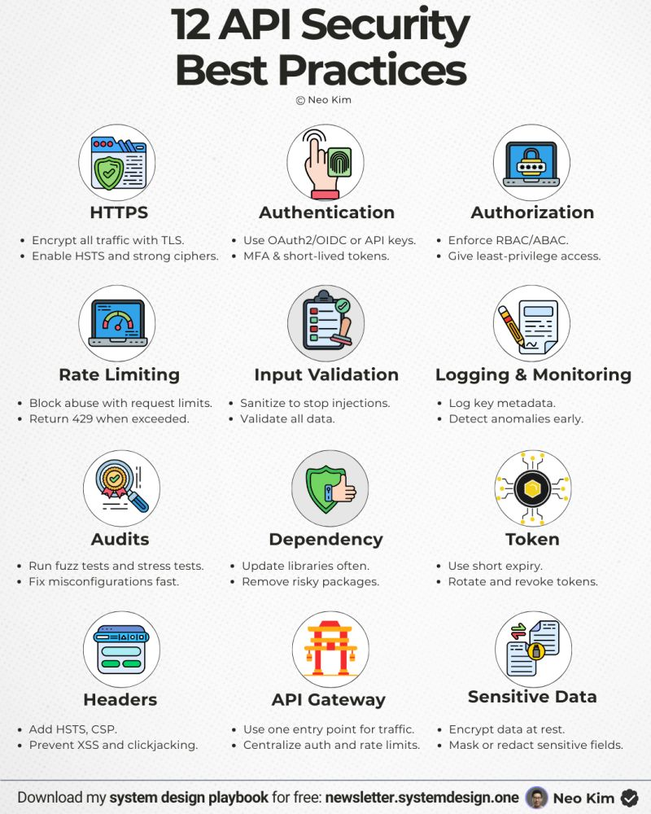
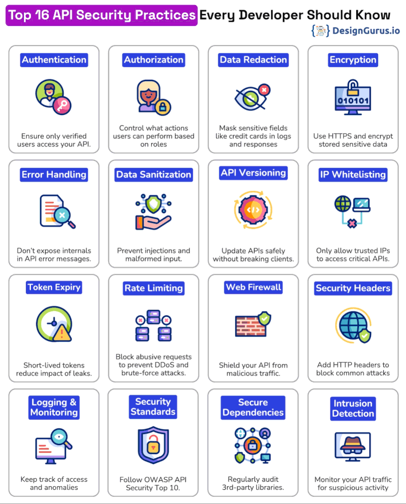
Architecture Concept
Core architecture and solution design concepts.
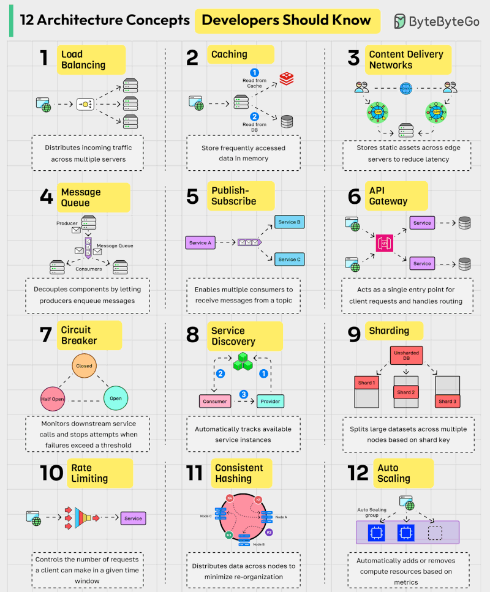
System Design Cheat Sheet
Quick reference for system design patterns and principles.
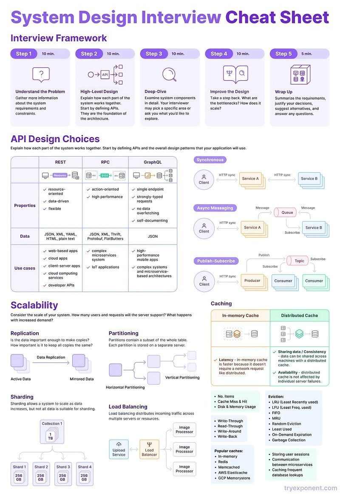
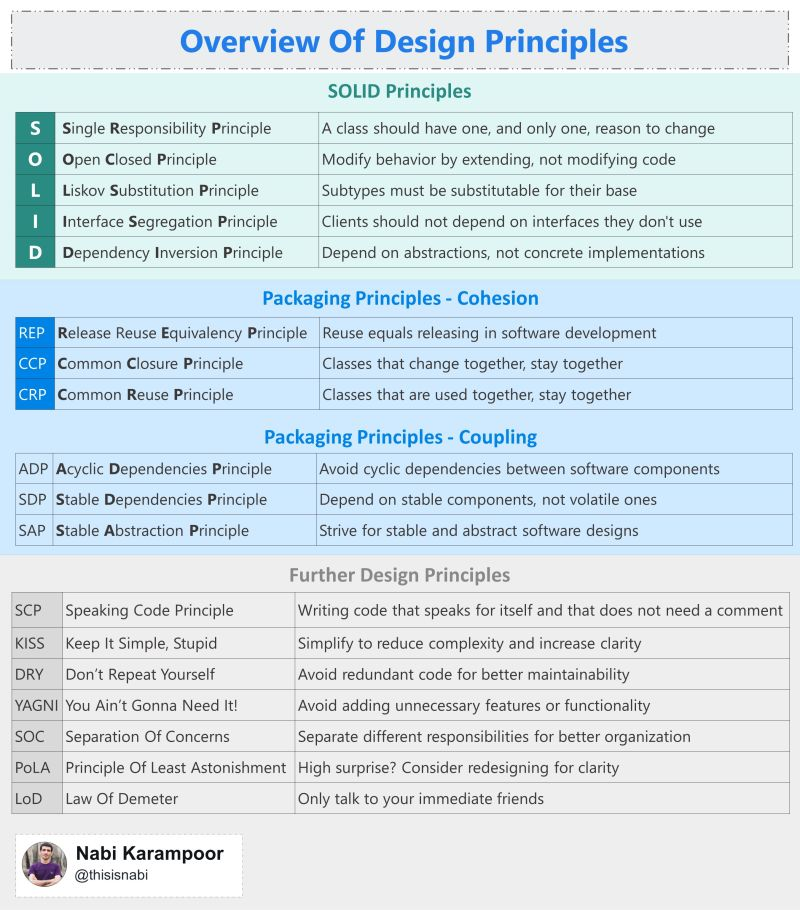
JWT (JSON Web Token)
What is JWT and how does it work?
JWT (JSON Web Token) is a compact, URL-safe token used to securely transmit
information between a client and a server. It is most commonly used for
authentication in modern web applications.
A JWT has three parts separated by dots:
xxxxx.yyyyy.zzzzz
- Header: Contains the signing algorithm (e.g., HS256, RS256) and the token type (JWT).
- Payload: Contains the "claims", statements about an entity (typically the user) and additional data.
- Signature: Ensures the token hasn’t been tampered with. It’s created by signing the encoded header + payload using a secret (HMAC) or private key (RSA/ECDSA).
- User logs in with credentials.
- Server validates credentials and generates a signed JWT.
- Server sends the JWT back to the client.
- Client stores the JWT (HttpOnly cookie or secure storage).
- Client sends JWT on future requests via
Authorization: Bearer <token>.
- Stateless: No server-side session storage required, making scaling easier.
- Tamper-resistant: Signature proves the content wasn’t modified.
- Lightweight: Small and efficient for transmission on every request.
- Always use HTTPS
- Keep access tokens short-lived (5–10 minutes recommended)
- Use refresh tokens for long sessions
- Prefer HttpOnly cookies over localStorage (reduces XSS risk)
- Rotate signing keys and support token revocation
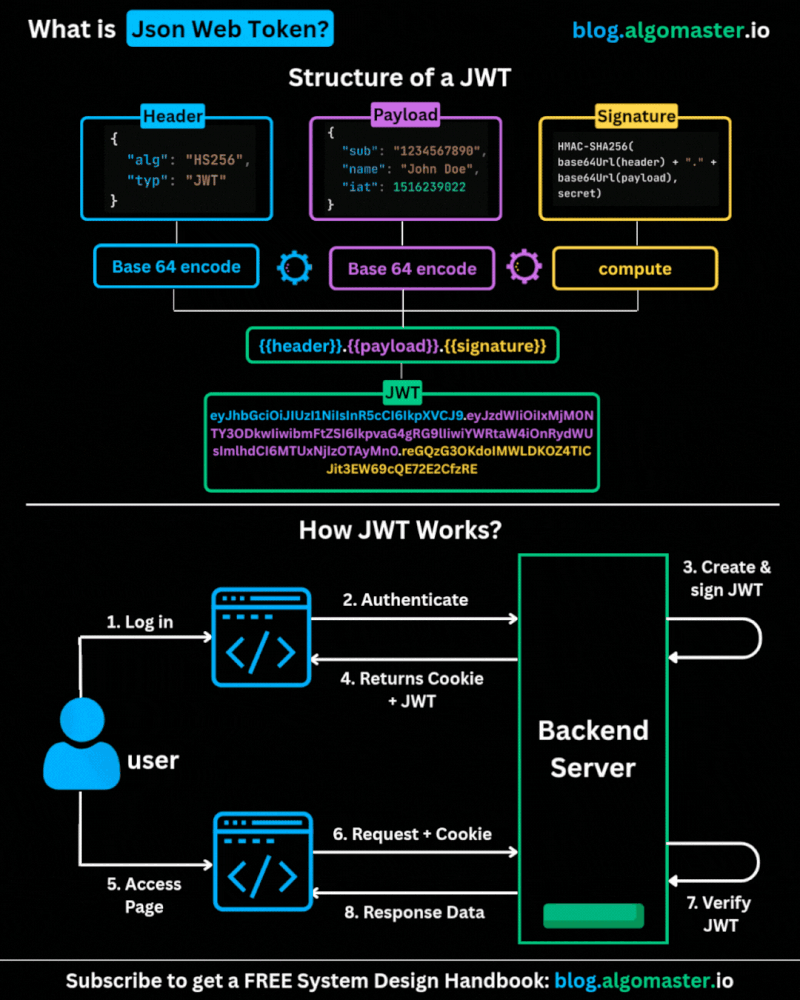
Database Scaling & Performance Cheat Sheet
Key Techniques to Improve Database Performance & Scalability
These strategies help optimize read/write performance, improve availability,
and support horizontal or vertical scaling in modern system design.
- Indexing: Speed up read queries by creating indexes on frequently accessed columns.
- Query Optimization: Fine-tune SQL queries, eliminate expensive operations, and leverage indexes effectively.
- Connection Pooling: Reduce overhead of opening/closing DB connections by reusing existing ones.
- Materialized Views: Pre-compute and store results of complex queries to avoid expensive recalculation.
- Denormalization: Store redundant but structured data to minimize joins in read-heavy workloads.
- Vertical Scaling: Add more CPU, RAM, or storage to a database server to handle higher workloads.
- Vertical Partitioning: Split large tables into smaller partitions containing subsets of columns.
- Sharding: Split the database into independent shards distributed across servers.
- Replication: Create multiple replicas across servers to balance read traffic and improve availability.
- Caching: Use in-memory stores like Redis to serve hot data faster and reduce database load.
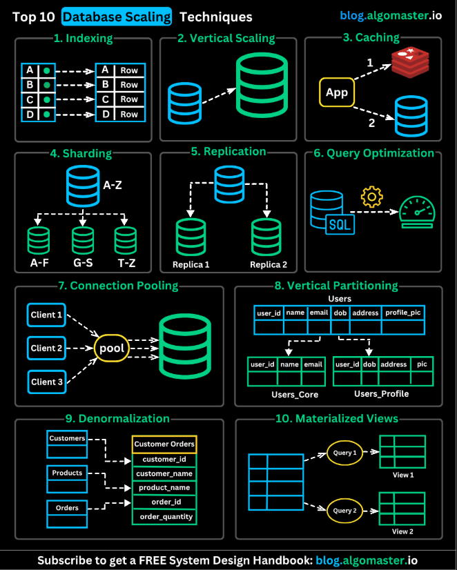
SOLID Principles (Object-Oriented Design)
SOLID is a set of five design principles that help developers build maintainable, scalable, and flexible software systems. These principles improve code readability, reduce coupling, and enhance extensibility.
Each class should have a single responsibility, and that responsibility should be entirely encapsulated by the class.
- Makes code modular and easier to understand.
- Reduces unintended side effects.
- Improves maintainability and testing.
Software entities (classes, modules, functions) should be open for extension but closed for modification.
- Encourages use of interfaces and abstract classes.
- New functionality can be added without changing existing code.
- Reduces risk of breaking stable features.
Subtypes must be substitutable for their base types without altering the correctness of the program.
- Derived classes should honor base class contracts.
- Prevents unexpected runtime behavior.
- Supports reliable polymorphism.
Clients should not be forced to depend on interfaces they do not use.
- Create smaller, specific interfaces.
- Avoid “fat” interfaces.
- Reduces unnecessary dependencies.
High-level modules should not depend on low-level modules; both should depend on abstractions. Abstractions should not depend on details; details should depend on abstractions.
- Promotes loose coupling.
- Improves flexibility and maintainability.
- Commonly implemented using Dependency Injection (DI).
💡 Why SOLID matters: These principles form the foundation of clean architecture, domain-driven design, and scalable enterprise systems.
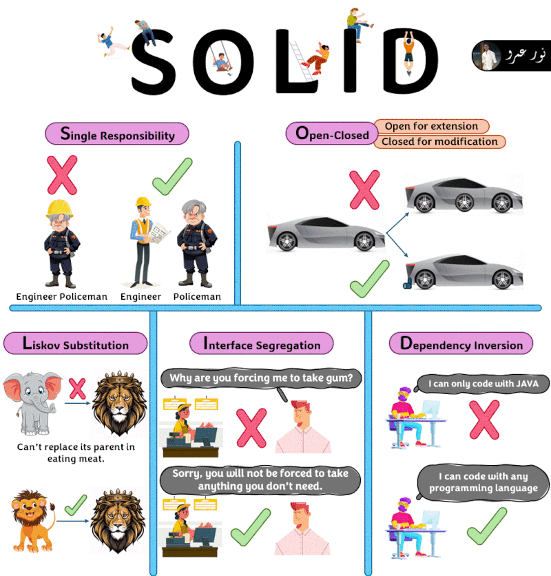
Database Lock Types & Differences
What are the differences among database locks?
In database management systems (DBMS), locks are mechanisms that control
concurrent access to data. They ensure data integrity, consistency,
and isolation between transactions.
- Shared Lock (S Lock): Allows multiple transactions to read a resource simultaneously, but prevents modification. Other transactions can also acquire shared locks.
- Exclusive Lock (X Lock): Allows a transaction to read and modify a resource. No other transaction can acquire any lock on that resource while held.
- Update Lock (U Lock): Used when a transaction intends to update a resource. Helps prevent deadlocks during read-to-write transitions.
- Schema Lock: Protects the structure of database objects (tables, indexes) during schema changes.
- Bulk Update Lock (BU Lock): Used during bulk insert operations to improve performance by reducing locking overhead.
- Key-Range Lock: Used with indexed data to prevent phantom reads by locking a range of keys.
- Row-Level Lock: Locks a specific row, allowing high concurrency.
- Page-Level Lock: Locks a fixed-size data page (multiple rows).
- Table-Level Lock: Locks the entire table. Simple but reduces concurrency.
- S vs X Lock: Shared allows reads; Exclusive allows writes and blocks others.
- U Lock: Prevents deadlocks during updates.
- Granularity: Row → Page → Table (increasing scope, decreasing concurrency).
- Key-Range Lock: Prevents phantom reads in higher isolation levels.
💡 Proper lock management balances data consistency and system concurrency, which is critical in high-performance systems.
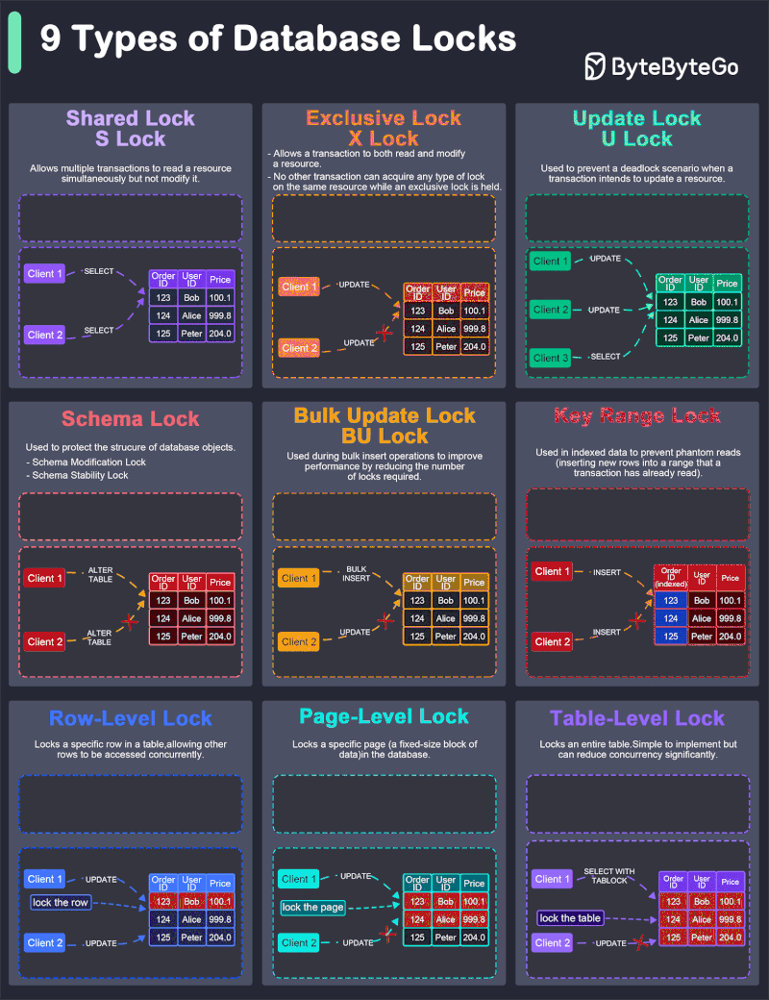
Top 8 Cache Eviction Strategies
Cache eviction strategies determine which items are removed when the cache reaches capacity. Choosing the right strategy improves performance, reduces latency, and optimizes memory usage.
- LRU (Least Recently Used): Removes the least recently accessed items first. Assumes recently used items are likely to be used again.
- MRU (Most Recently Used): Removes the most recently accessed items first. Useful when recently accessed items are unlikely to be reused soon.
- SLRU (Segmented LRU): Divides cache into probationary and protected segments. Frequently accessed items get promoted to the protected segment.
- LFU (Least Frequently Used): Evicts items with the lowest access frequency.
- FIFO (First In, First Out): Evicts the oldest items first, regardless of access frequency or recency.
- TTL (Time-to-Live): Each cache item has a predefined lifespan. Items expire automatically after the set duration.
- Two-Tiered Caching: Uses an in-memory cache (fast access) as Layer 1 and a distributed cache as Layer 2 for scalability.
- RR (Random Replacement): Randomly evicts an item. Simple and low-overhead, but not optimized for access patterns.
- LRU: Best general-purpose strategy.
- LFU: Best for stable access patterns.
- FIFO: Simple but less intelligent.
- TTL: Great for expiring stale data.
- Two-Tier: Best for large-scale distributed systems.
💡 In system design interviews and real-world architecture, LRU and LFU are most commonly discussed, especially in distributed caching systems like Redis or Memcached.
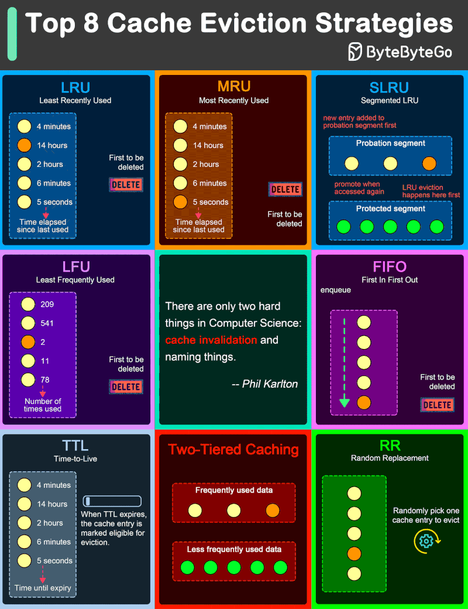
6 API Architecture Styles Every Developer Must Know
API architecture defines how clients and services communicate. Choosing the right style impacts scalability, performance, flexibility, and maintainability.
- Stateless architecture using standard HTTP methods.
- Resource-based URLs (GET, POST, PUT, DELETE).
- Simple, scalable, and widely adopted.
- Use Cases: Social media platforms, e-commerce websites, public web APIs.
- Query language allowing clients to request exactly the data they need.
- Reduces over-fetching and under-fetching.
- Aggregates data from multiple services.
- Use Cases: Complex front-end applications, CMS, large e-commerce systems.
- Full-duplex communication over a single TCP connection.
- Persistent connection between client and server.
- Enables real-time, two-way interaction.
- Use Cases: Chat systems, live sports updates, trading platforms, collaboration tools.
- High-performance RPC framework developed by Google.
- Uses HTTP/2 for transport.
- Efficient serialization using Protocol Buffers.
- Supports streaming (bi-directional).
- Use Cases: Microservices, cloud-native systems, mobile backends.
- Lightweight publish/subscribe messaging protocol.
- Designed for low-bandwidth, unreliable networks.
- Efficient for constrained devices.
- Use Cases: IoT systems, remote sensing, telemetry applications.
- Cloud provider dynamically manages infrastructure.
- Auto-scaling and pay-per-use pricing model.
- No server management required.
- Use Cases: Event-driven systems, microservices, background processing jobs.
- REST: Simple, scalable, industry standard.
- GraphQL: Flexible data querying.
- WebSocket: Real-time communication.
- gRPC: High-performance microservices.
- MQTT: IoT and constrained networks.
- Serverless: Infrastructure-free scaling.
💡 In modern cloud architecture (especially AZ-305 scenarios), REST and gRPC dominate backend services, while WebSocket and MQTT power real-time and IoT systems.
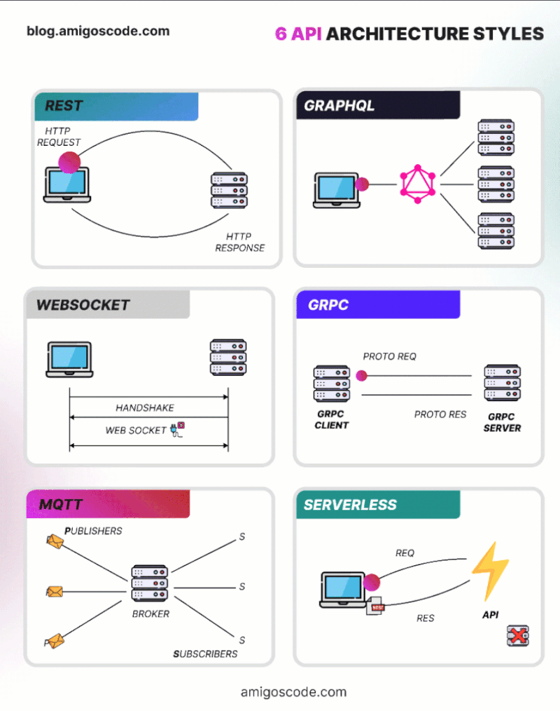
ACID Properties in Database Transactions
What does ACID mean?
ACID defines four essential properties that guarantee reliable
and consistent database transactions, especially in systems
with concurrent operations and potential failures.
All operations in a transaction are executed completely or not at all.
- If any part of the transaction fails, the entire transaction is rolled back.
- No partial writes are allowed.
- Often described as “all or nothing”.
Ensures that the database moves from one valid state to another valid state.
- All constraints, rules, and invariants must be preserved.
- Data written must satisfy schema rules, constraints, and triggers.
- ⚠ Not the same as consistency in the CAP theorem (which refers to read consistency across distributed nodes).
Concurrent transactions are isolated from each other.
- Prevents transactions from seeing intermediate states.
- The strictest level is Serializability.
- In practice, databases use lower isolation levels for performance.
Once a transaction is committed, the data is permanently stored.
- Survives crashes, power loss, or system failures.
- Typically ensured via write-ahead logging (WAL).
- In distributed systems, data is replicated across nodes.
- Atomicity: All or nothing.
- Consistency: Valid state → Valid state.
- Isolation: Transactions don’t interfere.
- Durability: Committed data is permanent.
💡 ACID guarantees strong reliability in relational databases and is critical in financial systems, inventory systems, and enterprise applications.
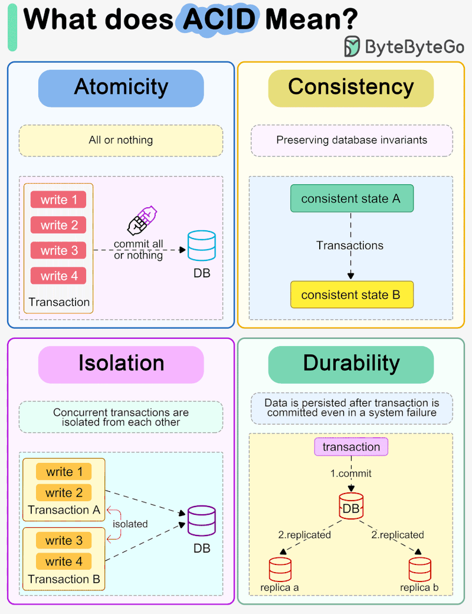
Session, Cookie, JWT, Token, SSO & OAuth 2.0 Explained
When a user logs in, the system must manage identity securely and efficiently. Different authentication models handle this in different ways depending on scalability, security, and cross-platform requirements.
- Server stores user identity (session data).
- Browser receives a session ID cookie.
- Server checks session store on every request.
- Works well for traditional web apps.
- ⚠ Not ideal for distributed systems or multi-device scenarios.
- User identity is encoded into a token.
- Browser sends token on each request.
- No server-side session storage required (stateless).
- Requires proper encryption and validation.
- A standardized token format with header, payload, and signature.
- Digitally signed to ensure integrity.
- Stateless — no session storage required.
- Common in modern APIs and microservices.
- Uses a centralized authentication provider.
- One login works across multiple applications.
- Improves user experience and enterprise security.
- Common in corporate and cloud ecosystems.
- Authorization framework (not authentication).
- Allows third-party apps to access user data securely.
- Users don’t share passwords with third-party apps.
- Uses access tokens and scopes for limited permissions.
- Encodes a random authentication token inside a QR code.
- User scans the code with a trusted device.
- Logs in without typing credentials.
- Common in mobile-to-web login flows.
- Session: Server-side stateful.
- Token/JWT: Stateless, scalable APIs.
- SSO: Centralized login across systems.
- OAuth 2.0: Secure delegated access.
- QR Login: Passwordless convenience.
💡 Modern cloud architectures (microservices, SPAs, mobile apps) typically prefer JWT + OAuth 2.0 for scalability and security.
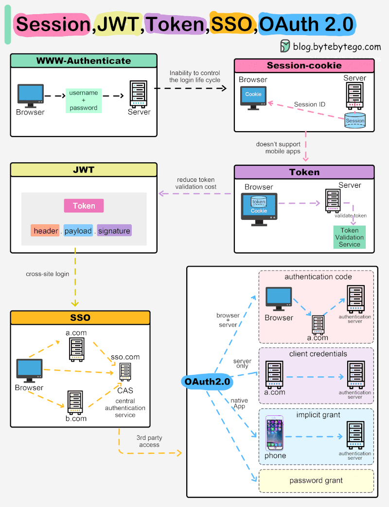
Common HTTP Methods / Verbs
HTTP methods define the action to be performed on a resource. Understanding them is essential for API design and web development.
- GET: Retrieves a resource. Idempotent. Multiple identical requests return the same result.
- PUT: Updates or creates a resource. Idempotent. Multiple identical requests update the same resource.
- POST: Creates a new resource. Not idempotent. Identical requests may create duplicates.
- DELETE: Deletes a resource. Idempotent. Multiple identical requests delete the same resource.
- PATCH: Applies partial modifications to a resource. Useful for incremental updates.
- HEAD: Requests headers identical to GET but without the response body.
- CONNECT: Establishes a tunnel to the target server, often used for HTTPS proxies.
- OPTIONS: Returns supported communication options for a resource.
- TRACE: Performs a message loop-back test along the path to the target resource.

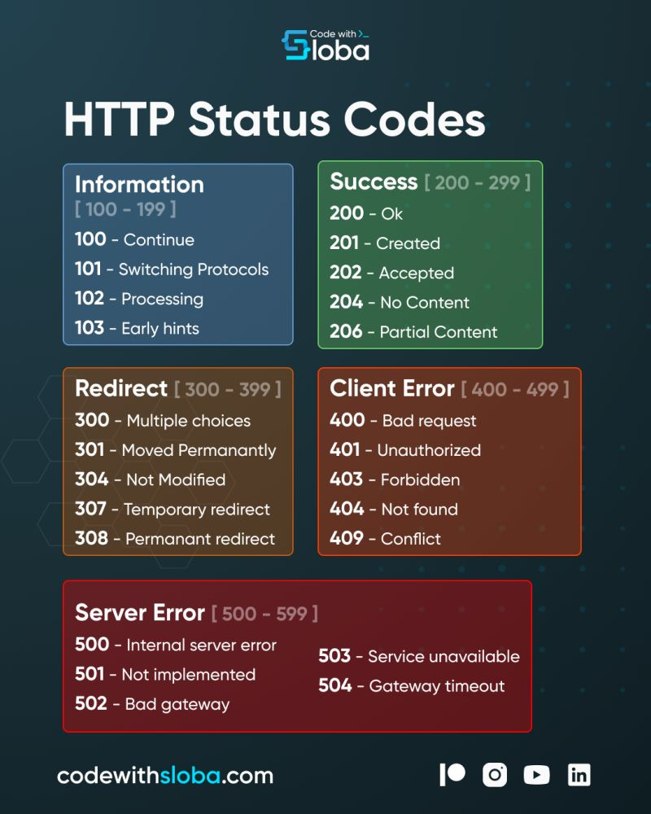
API Quick Reference
Async And Parallel Patterns In Dot NET
ASP Dot NET Core Flow